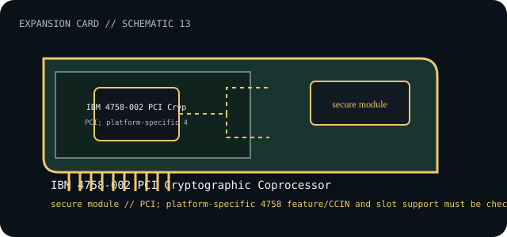

[ INDIVIDUAL COMPONENT // EXPANSION CARDS ]
IBM 4758-002 PCI Cryptographic Coprocessor
PCI cryptographic coprocessor for platform-managed secure key and cryptographic services. This is a model-specific catalog entry; confirm the exact label and revision before use.

IDENTIFICATION: Match the full model/part number and board revision to the label. Port and bus information below is included only where the linked manufacturer or standards documentation supports it; revisions and platform support may differ.
Specifications and service checks
| Catalog subcategory | Security coprocessors |
|---|---|
| Exact model / part identifier | IBM 4758-002 (feature code/CCIN 4758 family references vary by platform) |
| Bus / host interface | PCI; platform-specific 4758 feature/CCIN and slot support must be checked against IBM system documentation. |
| Verified interfaces / protocols | Cryptographic functions accessed through IBM cryptographic software/APIs; this coprocessor does not provide general-purpose external ports. |
| OS / driver / firmware caveat | Supported only on documented IBM platforms and with matching cryptographic software. Preserve the exact feature code, CCIN, operating-system release and library/CCA configuration; this is not a generic desktop PCI device. |
| Service note | Treat protected-memory battery handling and module tamper state as security-critical. Follow IBM service instructions before battery removal or replacement; loss of battery backup may erase protected key material. |
Installation and archival notes
- Record the board model, revision, serial/date code, firmware, bracket, accessories, and the documentation revision used to identify the unit.
- Confirm the host slot's electrical wiring/keying, required power, supported OS/driver, and any platform or option-ROM restriction in the cited model documentation.
- Use ESD precautions. Do not infer pinout, compatibility, protocol, boot support, or revision equivalence from a similar connector or product-family name.
Treat protected-memory battery handling and module tamper state as security-critical. Follow IBM service instructions before battery removal or replacement; loss of battery backup may erase protected key material.
Model-specific sources
- IBM — PCI Cryptographic Coprocessor, FC 4801 / CCIN 4758IBM platform compatibility, product family identity and configuration.
- IBM — iSeries cryptographic hardware guideModel-family operational and battery service cautions for the 4758 coprocessor.
Source links are selected for this exact model or its manufacturer-documented family. Review the source revision and your card's printed identifiers before service.